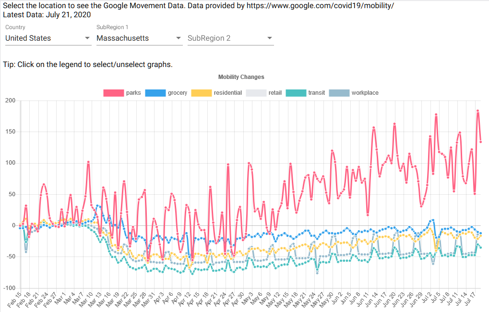

Google Mobility Data during Covid-19 pandemic
A quick hackathon project to display the latest Covid-19 data from WHO using a simple tabular
format
and ChartsJS graphs. I initially deployed this using Docker on Heroku but I soon used Vercel instead. Vercel
seems way more appropriate for static websites.
